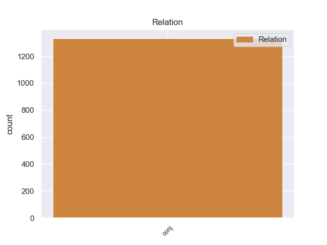
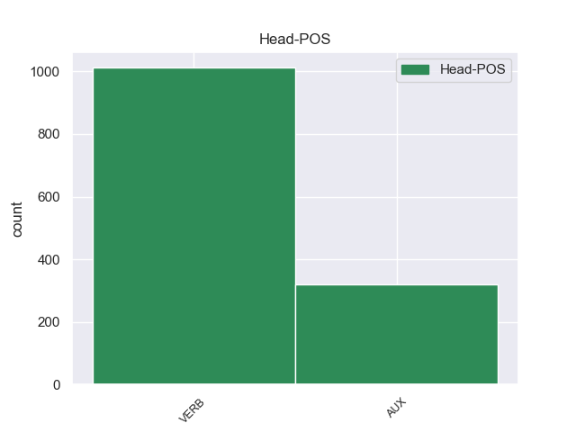
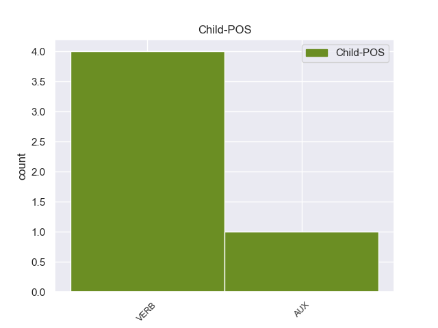

Distribution of features within this leaf



Agreement Rules sorted by frequency.
- When the dependent token is the conjunct(conj) of the head token,
1 Quando _ _ _ _ 0 _ _ _
2 il _ _ _ _ 0 _ _ _
3 terremoto _ _ _ _ 0 _ _ _
4 è _ _ _ _ 0 _ _ _
5 forte _ _ _ _ 0 _ _ _
6 , _ _ _ _ 0 _ _ _
7 si _ _ _ _ 0 _ _ _
8 rovinano rovinare VERB V Mood=Ind|Number=Plur|Person=3|Tense=Pres|VerbForm=Fin 0 _ _ _
9 o _ _ _ _ 0 _ _ _
10 crollano crollare VERB V Mood=Ind|Number=Plur|Person=3|Tense=Pres|VerbForm=Fin 8 conj 8:conj:o _
11 anche _ _ _ _ 0 _ _ _
12 le _ _ _ _ 0 _ _ _
13 case _ _ _ _ 0 _ _ _
14 e _ _ _ _ 0 _ _ _
15 i _ _ _ _ 0 _ _ _
16 palazzi _ _ _ _ 0 _ _ _
17 . _ _ _ _ 0 _ _ _
Disagree Examples:
1 In _ _ _ _ 0 _ _ _
2 gli _ _ _ _ 0 _ _ _
3 ambienti _ _ _ _ 0 _ _ _
4 giudiziari _ _ _ _ 0 _ _ _
5 la _ _ _ _ 0 _ _ _
6 seconda _ _ _ _ 0 _ _ _
7 ipotesi _ _ _ _ 0 _ _ _
8 viene venire AUX VA Mood=Ind|Number=Sing|Person=3|Tense=Pres|VerbForm=Fin 0 _ _ _
9 esclusa _ _ _ _ 0 _ _ _
10 e _ _ _ _ 0 _ _ _
11 anche _ _ _ _ 0 _ _ _
12 il _ _ _ _ 0 _ _ _
13 carabiniere _ _ _ _ 0 _ _ _
14 , _ _ _ _ 0 _ _ _
15 individuato _ _ _ _ 0 _ _ _
16 e _ _ _ _ 0 _ _ _
17 subito _ _ _ _ 0 _ _ _
18 ascoltato _ _ _ _ 0 _ _ _
19 da _ _ _ _ 0 _ _ _
20 gli _ _ _ _ 0 _ _ _
21 investigatori _ _ _ _ 0 _ _ _
22 , _ _ _ _ 0 _ _ _
23 avrebbe avere AUX VA Mood=Cnd|Number=Sing|Person=3|Tense=Pres|VerbForm=Fin 8 conj 24:aux _
24 cercato _ _ _ _ 0 _ _ _
25 di _ _ _ _ 0 _ _ _
26 accreditare _ _ _ _ 0 _ _ _
27 la _ _ _ _ 0 _ _ _
28 tesi _ _ _ _ 0 _ _ _
29 di _ _ _ _ 0 _ _ _
30 una _ _ _ _ 0 _ _ _
31 " _ _ _ _ 0 _ _ _
32 bambinata _ _ _ _ 0 _ _ _
33 " _ _ _ _ 0 _ _ _
34 . _ _ _ _ 0 _ _ _
1 questo _ _ _ _ 0 _ _ _
2 vogliono volere VERB V Mood=Ind|Number=Plur|Person=3|Tense=Pres|VerbForm=Fin 0 _ _ _
3 i _ _ _ _ 0 _ _ _
4 mercati _ _ _ _ 0 _ _ _
5 , _ _ _ _ 0 _ _ _
6 deluder _ _ _ _ 0 _ _ _
7 li _ _ _ _ 0 _ _ _
8 sarebbe essere AUX V Mood=Cnd|Number=Sing|Person=3|Tense=Pres|VerbForm=Fin 2 conj 10:cop _
9 un _ _ _ _ 0 _ _ _
10 suicidio _ _ _ _ 0 _ _ _
11 " _ _ _ _ 0 _ _ _
12 . _ _ _ _ 0 _ _ _
1 " _ _ _ _ 0 _ _ _
2 Non _ _ _ _ 0 _ _ _
3 è _ _ _ _ 0 _ _ _
4 possibile _ _ _ _ 0 _ _ _
5 - _ _ _ _ 0 _ _ _
6 si _ _ _ _ 0 _ _ _
7 lamenta _ _ _ _ 0 _ _ _
8 il _ _ _ _ 0 _ _ _
9 presidente _ _ _ _ 0 _ _ _
10 di _ _ _ _ 0 _ _ _
11 la _ _ _ _ 0 _ _ _
12 commissione _ _ _ _ 0 _ _ _
13 Esteri _ _ _ _ 0 _ _ _
14 - _ _ _ _ 0 _ _ _
15 che _ _ _ _ 0 _ _ _
16 Bossi _ _ _ _ 0 _ _ _
17 rimanga rimanere VERB V Mood=Sub|Number=Sing|Person=3|Tense=Pres|VerbForm=Fin 0 _ _ _
18 sempre _ _ _ _ 0 _ _ _
19 impunito _ _ _ _ 0 _ _ _
20 , _ _ _ _ 0 _ _ _
21 perché _ _ _ _ 0 _ _ _
22 viene _ _ _ _ 0 _ _ _
23 considerato _ _ _ _ 0 _ _ _
24 matto _ _ _ _ 0 _ _ _
25 o _ _ _ _ 0 _ _ _
26 buffone _ _ _ _ 0 _ _ _
27 e _ _ _ _ 0 _ _ _
28 così _ _ _ _ 0 _ _ _
29 gli _ _ _ _ 0 _ _ _
30 si _ _ _ _ 0 _ _ _
31 permette permettere VERB V Mood=Ind|Number=Sing|Person=3|Tense=Pres|VerbForm=Fin 17 conj 4:csubj|17:conj:e _
32 di _ _ _ _ 0 _ _ _
33 fare _ _ _ _ 0 _ _ _
34 inaudite _ _ _ _ 0 _ _ _
35 affermazioni _ _ _ _ 0 _ _ _
36 che _ _ _ _ 0 _ _ _
37 cancellano _ _ _ _ 0 _ _ _
38 il _ _ _ _ 0 _ _ _
39 codice _ _ _ _ 0 _ _ _
40 penale _ _ _ _ 0 _ _ _
41 . _ _ _ _ 0 _ _ _
1 La _ _ _ _ 0 _ _ _
2 destra _ _ _ _ 0 _ _ _
3 punta _ _ _ _ 0 _ _ _
4 i _ _ _ _ 0 _ _ _
5 piedi _ _ _ _ 0 _ _ _
6 , _ _ _ _ 0 _ _ _
7 anche _ _ _ _ 0 _ _ _
8 ieri _ _ _ _ 0 _ _ _
9 la _ _ _ _ 0 _ _ _
10 tensione _ _ _ _ 0 _ _ _
11 è _ _ _ _ 0 _ _ _
12 tornata _ _ _ _ 0 _ _ _
13 a _ _ _ _ 0 _ _ _
14 le _ _ _ _ 0 _ _ _
15 stelle _ _ _ _ 0 _ _ _
16 , _ _ _ _ 0 _ _ _
17 cresce crescere VERB V Mood=Ind|Number=Sing|Person=3|Tense=Pres|VerbForm=Fin 0 _ _ _
18 la _ _ _ _ 0 _ _ _
19 campagna _ _ _ _ 0 _ _ _
20 contro _ _ _ _ 0 _ _ _
21 i _ _ _ _ 0 _ _ _
22 negoziati _ _ _ _ 0 _ _ _
23 di _ _ _ _ 0 _ _ _
24 pace _ _ _ _ 0 _ _ _
25 con _ _ _ _ 0 _ _ _
26 i _ _ _ _ 0 _ _ _
27 palestinesi _ _ _ _ 0 _ _ _
28 e _ _ _ _ 0 _ _ _
29 qualche _ _ _ _ 0 _ _ _
30 frangia _ _ _ _ 0 _ _ _
31 oltranzista _ _ _ _ 0 _ _ _
32 potrebbe potere AUX VM Mood=Cnd|Number=Sing|Person=3|Tense=Pres|VerbForm=Fin 17 conj 34:aux _
33 davvero _ _ _ _ 0 _ _ _
34 attentare _ _ _ _ 0 _ _ _
35 a _ _ _ _ 0 _ _ _
36 la _ _ _ _ 0 _ _ _
37 vita _ _ _ _ 0 _ _ _
38 di _ _ _ _ 0 _ _ _
39 il _ _ _ _ 0 _ _ _
40 primo _ _ _ _ 0 _ _ _
41 ministro _ _ _ _ 0 _ _ _
42 . _ _ _ _ 0 _ _ _
1 C' _ _ _ _ 0 _ _ _
2 è essere VERB V Mood=Ind|Number=Sing|Person=3|Tense=Pres|VerbForm=Fin 0 _ _ _
3 sicuramente _ _ _ _ 0 _ _ _
4 una _ _ _ _ 0 _ _ _
5 maggioranza _ _ _ _ 0 _ _ _
6 favorevole _ _ _ _ 0 _ _ _
7 in _ _ _ _ 0 _ _ _
8 Parlamento _ _ _ _ 0 _ _ _
9 , _ _ _ _ 0 _ _ _
10 però _ _ _ _ 0 _ _ _
11 questa _ _ _ _ 0 _ _ _
12 minoranza _ _ _ _ 0 _ _ _
13 viscerale _ _ _ _ 0 _ _ _
14 potrebbe potere AUX VM Mood=Cnd|Number=Sing|Person=3|Tense=Pres|VerbForm=Fin 2 conj 15:aux _
15 cercare _ _ _ _ 0 _ _ _
16 in _ _ _ _ 0 _ _ _
17 qualche _ _ _ _ 0 _ _ _
18 modo _ _ _ _ 0 _ _ _
19 di _ _ _ _ 0 _ _ _
20 fermare _ _ _ _ 0 _ _ _
21 la _ _ _ _ 0 _ _ _
22 riforma _ _ _ _ 0 _ _ _
23 " _ _ _ _ 0 _ _ _
24 . _ _ _ _ 0 _ _ _